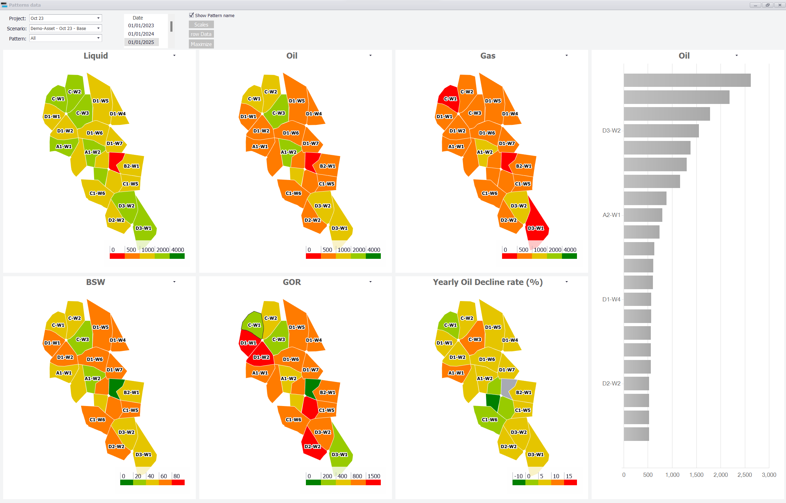

|
Forecast results: Patterns (maps)
1. Opening the maps
Click "Maps" in the "Forecast Results" group of the main ribbon. The "Patterns data" window shows the forecast on maps of the patterns defined in the Patterns section (see Patterns): each pattern polygon is coloured by the value of a result at the chosen date.

2. Using the window
1.Choose the "Project:", the "Scenario:" and the "Pattern:" set.
2.Click a date in the "Date" list. The maps show the values at that time step.
3.Six maps are shown. Pick the parameter of each map in the list above it. The defaults are Liquid, Oil, Gas, BSW, GOR and Yearly Oil Decline rate (%) for an oil asset.
4.The bar chart on the right ranks the wells or patterns by the parameter picked above it (Oil by default).
Parameters available on the maps include the rates (Oil, Water, Gas, Liquid, Water Injection, Gas Injection), their cumulatives, BSW, GOR, Production rb, Injection rb, Voidage and Cum Voidage, recovery factors at the date, yearly decline rates, and the well "Status".
2.1 Display options
•"Show as Patterns" or "Show as bubble" — colour the pattern polygons, or draw one bubble per well ("Bubble Size:" sets their size).
•"Show Pattern name", "Show Well name", "Show Coordinates", "Show trajectory", "Show Background", "Show Bing map" — what is drawn on the maps.
•"Scales" — the colour bands (values and colours) used for each parameter.
•"raw Data" — the table of values behind the maps.
•"Maximize" — enlarges the maps.
•The map engine list offers "New" (default) and "Old". Both draw the same data; switch only if a map does not display correctly. "Refresh maps" redraws them.
|